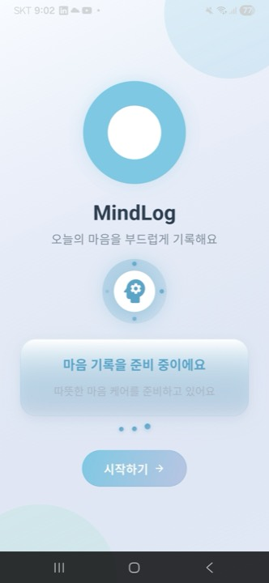
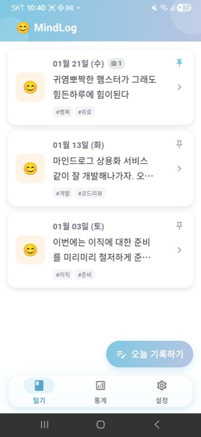
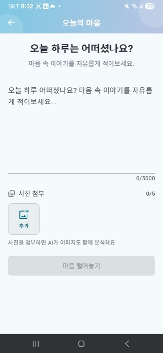
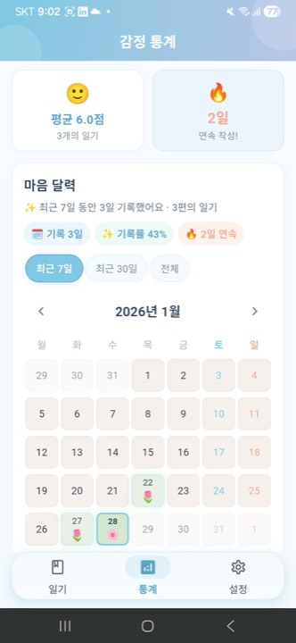
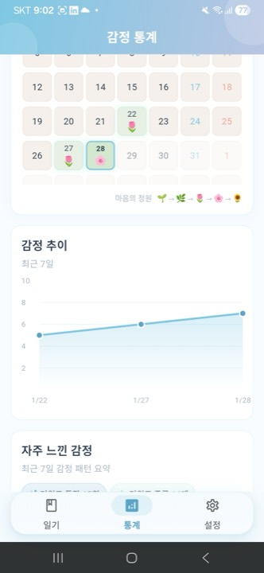
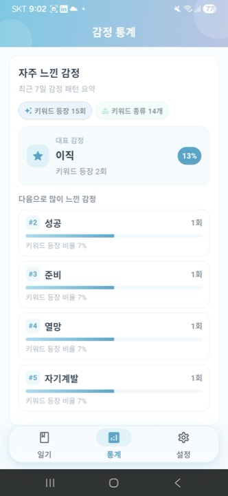
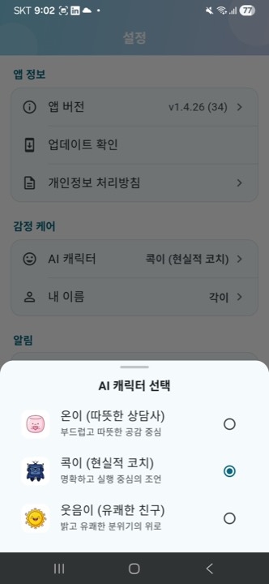
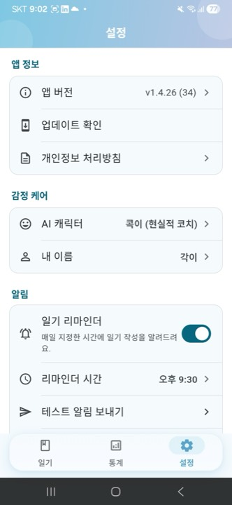

AI 기반 감정 케어 다이어리
당신의 일기를 분석하여 감정 상태를 파악하고,
따뜻한 위로의 메시지와 맞춤형 행동 지침을 제공합니다.
로컬 데이터베이스(SQLite)에 안전하게 저장되며, 날짜별로 일기를 관리하고 조회할 수 있습니다.
최신 Groq 모델(gpt-oss-120b + Qwen Vision)으로 실시간에 가까운 감정 분석을 제공합니다. (2026년 7월 모델 업데이트 완료 — 안정성/효율성 향상)
감정 추이 차트, 감정 정원(🌱→🌻), 키워드 태그 클라우드로 나의 감정 패턴을 시각화합니다.
AI가 분석한 감정 상태에 기반하여 공감 메시지와 맞춤형 행동 지침을 제안합니다.
모든 일기 데이터는 로컬 기기에만 저장되어 개인 정보가 안전하게 보호됩니다.
320dp~600dp+ 다양한 화면 크기에 최적화된 반응형 디자인으로 모든 기기에서 편안하게 사용할 수 있습니다.
4자리 PIN + SHA-256 암호화로 민감한 일기를 안전하게 보호합니다. 인증된 세션에서만 접근 가능하며 통계에서 완전히 제외됩니다.
v1.4.54까지의 개선 사항을 소개합니다. 3-way LLM 합의(Claude × Gemini × Codex)로 도출한 P0/P1 성능 최적화 묶음 — Firebase Performance 측정 인프라 도입, Groq 응답 SQLite 캐싱(SHA-256 해시·LRU 1000건), 알림 큐 diff 알고리즘으로 platform channel 호출 0-call 최적화, JSON 파싱 isolate 오프로드, Cheer Me 7일 큐 재구축 — 등이 포함됩니다.
알림 신뢰성을 높이기 위한 엔지니어링 작업 완료. 모든 알림 ID(주간 인사이트 2002, 안전 후속 2004, CBT 동적 3001+)를 NotificationService에 중앙 집중화하여 중복/충돌 위험 제거. 동적 ID 생성 시 pending 알림 검사로 충돌 자동 회피 로직 추가. 큐 적용(_applyCheerMeQueueDiff)에서 per-item 오류 처리로 부분 실패 시에도 나머지 알림 정상 예약 보장 (Crashlytics 로깅 포함). mindcare 알림 {name} 패턴 금지 검증, 감정 경계값/부분 실패 시나리오 테스트 대폭 강화. 장기적으로 사용자 알림 경험의 안정성과 코드 유지보수성을 크게 향상시켰습니다.
3-way LLM 합의 기반 P0 작업으로, 동일 일기 재분석 비용을 0에 가깝게 만들었습니다. groq_analysis_cache 테이블을 신설하고 (model, content, character, userName, imageHashes, promptVersion)을 SHA-256 해시 키로 사용합니다. content는 공백 압축으로 정규화하며, 1000건 임계 시 last_used_at 기반 LRU eviction이 작동합니다. 위기 감지(is_emergency=true) 응답은 캐시 제외로 매번 재평가하여 안전성을 보장하며, PromptConstants.version 변경으로 일괄 무효화 가능한 설계입니다.
매 호출마다 7일치 Cheer Me 큐를 통째로 cancel + reschedule 하던 비용을 제거했습니다. 신규 notification_diff_planner.dart는 getPendingNotifications()로 추출한 현재 상태와 새 plan을 결정적 ID 기준으로 비교하여 변경된 알림만 cancel/reschedule 합니다. 동일 plan 재적용 시 platform channel 호출 0건을 보장하며, 캐시 적중은 reminder_unchanged analytics 이벤트로 모니터링됩니다.
최적화 작업의 객관적 검증을 위해 측정 인프라부터 구축했습니다. firebase_performance ^0.10.0+11를 도입하고, PerformanceTraces.measure() 헬퍼로 TimelineTask(local DevTools)와 Firebase Trace(prod 텔레메트리)를 동시에 래핑합니다. db.getAllDiaries, groq.analyze, notification.applySettings, first.diaryList.paint 4개 핵심 trace 정의. prod에서만 collection enable로 debug 빌드 노이즈를 차단합니다.
Vision 응답(약 1500토큰, 4KB+)의 메인 isolate 파싱이 일으키던 프레임 드롭을 해결했습니다. AnalysisResponseParser의 진입점을 top-level 함수로 추출하고 compute() API로 isolate에 오프로드했습니다. 4KB 미만 작은 응답은 isolate 생성 비용을 피해 메인에서 처리하며, isolate 실행 실패 시 메인 fallback으로 안정성을 보장합니다.
단일 시점 reminder를 7일치 일별 큐로 재설계했습니다(+1176/-322 lines). 자가응원 메시지 변경, 사용자 이름 변경, 시간 변경 등 다양한 트리거에서 큐 전체를 멱등적으로 재생성하며, 새로운 requiresCheerMeQueueRebuild() 게이트로 불필요한 재생성을 차단합니다. getRandomMindcareBody() 폴백 로직 정비로 빈 메시지 알림 발생 가능성도 제거했습니다.
분석 직후 provider.invalidate()로 SQLite 풀스캔이 발생하여 발생하던 새로고침 깜빡임을 제거했습니다. DiaryListController.addOrUpdateDiary()를 신설해 메모리 상태를 직접 갱신하며, DiaryAnalysisController는 invalidate 대신 이 메서드를 호출하도록 변경되었습니다. 결과적으로 일기 분석 완료 → 목록 화면 표시까지 SQLite I/O가 0회 발생합니다.
이전 리팩토링 과정에서 누락된 retry 로직을 복원했습니다. 5xx 응답과 타임아웃에 대한 지수 백오프 재시도가 다시 활성화되어, Groq API 일시 장애 시에도 분석이 안정적으로 완료됩니다. 테스트 472줄을 전면 재구성하여 retry 시나리오(횟수, 백오프, 최종 실패 등)를 명시적으로 검증합니다.
Groq 폐기 모델 대응으로 텍스트 분석 모델을 openai/gpt-oss-120b, 이미지 분석 모델을 qwen/qwen3.6-27b으로 교체. reasoning 모델 특성을 반영해 max_completion_tokens 상향 + 파라미터 최적화(텍스트 전용). 에뮬레이터 실증 테스트로 JSON 품질, 한국어 응답, 위기 감지 경로(is_emergency) 모두 검증 완료. 사용자 영향 최소화 + 비용 효율 향상.
모든 P0/P1 작업을 RED-GREEN-REFACTOR로 진행했습니다. notification_diff_planner_test.dart 8건(동일 plan 0-call 검증), groq_cache_key_test.dart 9건(해시 결정성·정규화), groq_analysis_cache_test.dart 7건(CRUD + LRU + emergency 제외), diary_repository_impl_test.dart +254줄 등 신규 41건을 포함해 1696/1696 통과를 유지하며 flutter analyze 클린입니다.
Self-Encouragement 시스템에 시간대 기반 메시지 필터링을 구현했습니다. MessageRotationMode.timeAware 선택 시 morning(5-11h)/afternoon(12-17h)/evening(18-4h)로 분류하여 시간대에 맞는 메시지를 우선 전달합니다. 매칭 메시지 없을 시 전체 풀 폴백을 포함한 안전장치도 설계했습니다. 설정 UI에 '시간대 맞춤 선택' RadioListTile을 추가하고, 메시지 입력 다이얼로그에 ChoiceChip 4종(전체/아침/오후/저녁) 시간대 태깅 UI를 구현했습니다.
메시지 선택 로직이 UseCase와 Service 두 곳에 중복되어 있던 구조적 문제를 해결했습니다. GetNextSelfEncouragementMessageUseCase + 테스트 총 485줄을 삭제하고, NotificationSettingsService를 유일한 메시지 선택 경로로 통일했습니다. 이로써 emotionAware/timeAware 로직 변경 시 단일 수정 지점만 관리하면 되는 구조가 확립됐습니다.
selectMessage() 단위 테스트 6케이스(시간대 필터링 경계값, emotionAware 가중치 검증)와 MessageInputDialog 위젯 테스트 17건(timeCategory 선택/해제, 수정 모드 프리로드, record 반환값 검증)을 추가했습니다. 전체 테스트 1,633건 통과, flutter analyze 0 errors를 유지합니다.
EmpathyMessage가 항상 SingleChildScrollView 안에 렌더링됨에도 maxLines: 4 + AnimatedCrossFade + TextPainter 측정으로 내부에서 truncation을 유발했습니다. 렌더링 컨텍스트를 분석해 불필요한 상태 관리를 전면 제거하고 StatelessWidget으로 전환했습니다. 코드 90줄 → 62줄, HapticFeedback·AppDurations import 삭제.
4개 독립 원인이 동시에 작용한 복합 버그를 체계적으로 분석하고 수정했습니다. (D) 정규식 [,의은을이]? → (?:[,의은을이]|에게|께)? alternation. (C) getRandomReminderTitle() userName 인자 전파 누락. (B) valueOrNull AsyncLoading → await .future. (A) hasPlaceholder 검사로 bake-in 리터럴 강제 재스케줄.

온보딩

일기 목록

일기 작성

마음 달력

감정 추이

키워드 분석

AI 캐릭터

설정
MindLog와 함께 나의 감정을 기록하고 이해해보세요.